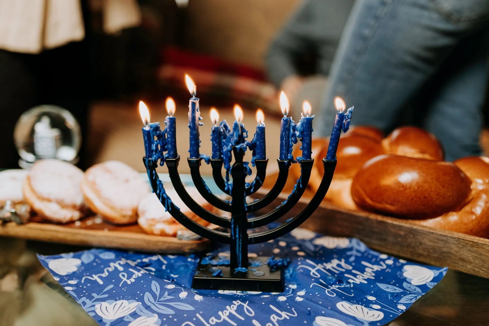

December 4 to 12
Begins at sundown in December
Hanukkah lesson: learn the history, the hanukkiah and how families celebrate, in 25 minutes
A free, no prep Hanukkah lesson for grades 3 to 8: the history, the hanukkiah, why the date moves, with verified dates for 2026 to 2030. Project it and teach.
What your class will see
Press Teach it now and the board plays these in order. Click any slide to start there.
What it is
Hanukkah is an eight-day Jewish holiday that remembers the Maccabean Revolt against the Seleucid Empire in the 2nd century BCE. In the story, the Maccabees recaptured Jerusalem and rededicated the Second Temple. The eight nights remember the story that one day's supply of sacred oil lasted for eight days.
Each evening, one more candle is lit on a nine-branched menorah called a hanukkiah, starting with one candle on the first night and reaching eight on the last. Eight branches stand for the nights of the holiday. The ninth branch holds the shamash, the helper candle that is used to light the others.
Hanukkah begins on the 25th day of Kislev in the Hebrew calendar, so its date moves on the calendar on our wall. In 2026 it begins at sundown on Friday, December 4 and ends at nightfall on Saturday, December 12. In 2027 it begins at sundown on Friday, December 24 and ends on Saturday, January 1.
Many families light the hanukkiah each evening, eat foods fried in oil such as latkes (potato pancakes) and sufganiyot (doughnuts), spin a four-sided top called a dreidel, and exchange gifts. Customs differ from family to family, and this lesson teaches about the holiday. It does not ask any student to take part in a religious practice.
How to run it
25 minutes, 5 steps. The time on the left is when each step starts.
-
0:00
Warm-up
4 minOn the boardHanukkah begins at sundown on: Friday, December 4, 2026. Friday, December 24, 2027. Tuesday, December 12, 2028. Saturday, December 1, 2029. Friday, December 20, 2030. What do you notice? What do you wonder?
You do- Show the five dates. Students write one thing they notice and one thing they wonder, then share with a partner.
- Write two or three of the questions on the board. Do not answer them yet.
Say: Hanukkah is a Jewish holiday, and today we are learning about it the way we would learn about any holiday around the world.
-
4:00
The story in five facts
8 minOn the board- Hanukkah remembers the Maccabean Revolt against the Seleucid Empire in the 2nd century BCE and the rededication of the Second Temple in Jerusalem.
- Hanukkah lasts eight nights. In 2026 it begins at sundown on Friday, December 4 and ends at nightfall on Saturday, December 12.
- A hanukkiah has nine branches: eight for the nights of the holiday and one for the shamash, the helper candle that lights the others.
- One candle is lit on the first night, two on the second, and so on, up to eight on the last night.
- Hanukkah begins on the 25th day of Kislev in the Hebrew calendar, so its date moves on our calendar from year to year.
You do- Read the five facts aloud, one at a time.
- After fact 3, ask why a hanukkiah would have one more branch than the holiday has nights. Take two guesses before reading fact 4.
- After fact 5, go back to the warm-up questions on the board. Which ones have been answered?
Say: The word to remember is shamash. It means helper. It is the candle that lights the others.
-
12:00
Draw the hanukkiah
8 minOn the boardDraw a hanukkiah with nine branches. Label the shamash. Shade the candles that are lit on night 5. Then answer: How many candles are lit on night 8, not counting the shamash? How many candles are lit across all eight nights, not counting the shamash?
You do- Students draw nine branches in a row and label the shamash.
- Students shade the candles for night 5 and write their two answers.
- Pairs compare totals. Answers: night 5 has 5 candles, night 8 has 8 candles, and all eight nights use 36 candles (1 + 2 + 3 + 4 + 5 + 6 + 7 + 8).
- Ask one pair to show how they added the numbers.
Say: Eight branches for eight nights, plus one branch for the helper.
-
20:00
A respectful question
3 minOn the boardWrite one respectful question you could ask a friend or neighbor who celebrates Hanukkah. Start with What, How or Why.
You do- Students write one question and share a few aloud.
- Point out that a good question invites someone to share. It never asks a person to speak for everyone who celebrates.
- Do not ask any student to describe their own family's practice. Students may share if they choose.
-
23:00
Exit ticket
2 minOn the boardName two things you learned about Hanukkah. Use the word hanukkiah or the word shamash in one of them.
You do- Students answer on a scrap of paper and hand it to you at the door.
Discussion questions
Open an answer when you want it.
Why does the date of Hanukkah change from year to year on our calendar?
Hanukkah begins on the 25th day of Kislev in the Hebrew calendar, not on a fixed date in the calendar on our wall. That is why it begins on December 4 in 2026 and on December 24 in 2027.
Why does a hanukkiah have nine branches when the holiday has eight nights?
Eight branches are for the eight nights. The ninth branch holds the shamash, the helper candle that is used to light the others.
Why are foods fried in oil, such as latkes, part of the holiday?
The Library of Congress explains that eating fried foods is a way to remember the story of the long-lasting temple oil.
Why might a holiday that remembers events from long ago still matter to families today?
Answers vary. The Library of Congress notes that the story's emphasis on freedom has been a recurring theme. Accept any answer that connects the story to something families value, such as history, freedom, light or time together.
Exit ticket
Name two things you learned about Hanukkah. Use the word hanukkiah or the word shamash in one of them.
Look for two accurate facts, for example: it lasts eight nights; one more candle is lit each night; the shamash lights the other candles; it follows the Hebrew calendar, so the date moves; it remembers the Maccabean Revolt and the rededication of the Second Temple.
Make it fit your class
Younger students
For kindergarten to grade 2, skip the dates and the history. Explain that Hanukkah is a Jewish holiday of eight nights and that a family lights one more candle each night. Students draw a hanukkiah with nine branches, show the candles for night 3, and tell you the count.
Older students
For grades 9 to 12, have students read the Hebcal page and the Library of Congress post and sort what each one tells them into three groups: historical events, the oil story, and customs. Ask what kind of evidence each source offers, and why one holiday can remember both a historical event and a story families tell.
Where the facts come from
- Hebcal, Chanukah. Used for the start and end dates for 2026 to 2030, the Maccabean Revolt and the rededication of the Second Temple, and the nine-branched hanukkiah.
- Hebcal, Chanukah 2026. Used for the 2026 start at sundown on December 4, the end at nightfall on December 12, and the 25th day of Kislev; the pages for 2027 to 2030 were opened as well.
- Library of Congress, Highlighting the Holidays: Happy Hanukkah. Used for the nightly menorah lighting, the dreidel, latkes and sufganiyot, and gifts.
- Library of Congress, Hanukkah in the Library's Collections. Used for the oil story, the fried foods tradition, and the theme of freedom.
- Reform Judaism, Hanukkah. Used for the eight branches plus the shamash (helper) candle that lights the others.
Image credits
- Stainless Steel Candelabra Beside Clear Wine Glasses by Element5 Digital, Pexels License. Source.
- Hungarian Jewish Museum, Combined Jewish and Christian calendar by Szilas, Public Domain. Source.
- Hanukkiah Sinagoga di Genova by Postcrosser, CC BY-SA. Source.
- Photo Of Woman Carrying Candle Holder by RDNE Stock project, Pexels License. Source.
- Candelabrum with ornament and inscription on tag by Skylar Kang, Pexels License. Source.


Updated October 31, 2026